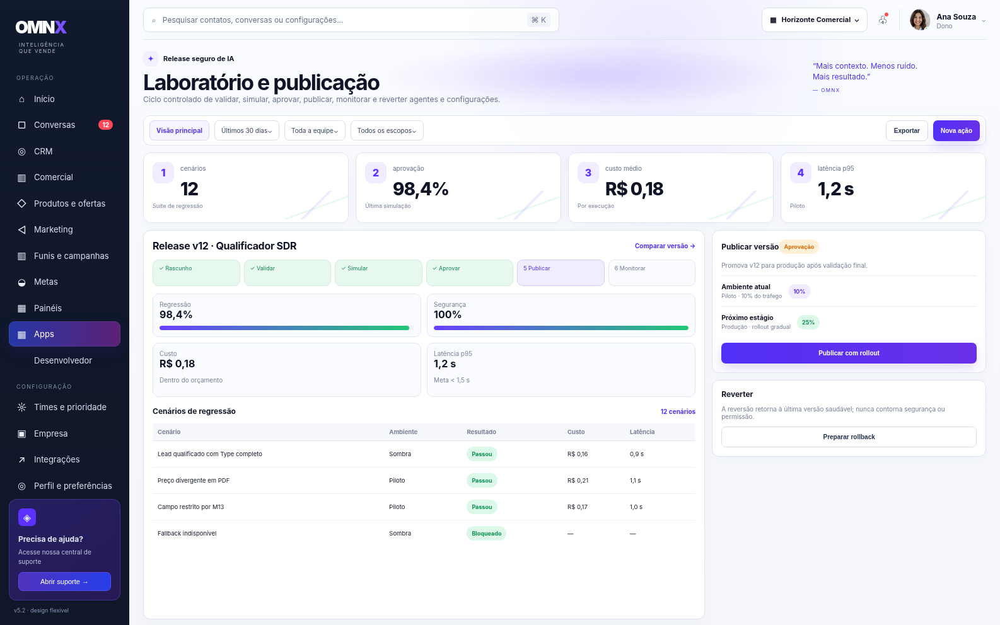
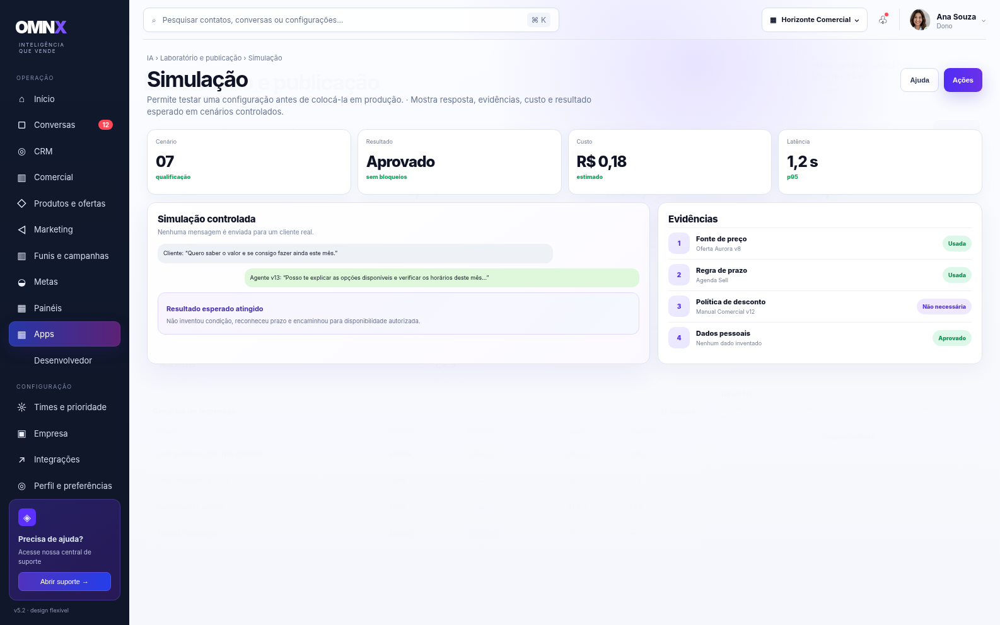

M17 · Laboratório e publicação
Ambiente seguro para testar e publicar mudanças de IA.
GUIA PARA APRESENTAÇÃO AO CLIENTE

Para que serve?
Ambiente seguro para testar e publicar mudanças de IA.

Simulação
Permite testar uma configuração antes de colocá-la em produção.